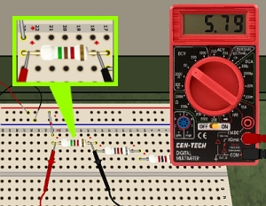
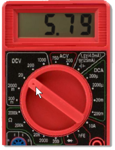

|

Figure 1. Measuring the voltage drop across a resistor in a circuit. |
Measuring voltage in a circuit is like measuring the pressure in a water pipe. While a pressure gage indicates the pressure difference between the inside and the outside of the pipe, a voltmeter indicates a "pressure" difference between it's red probe and black probe. It's an "electrical pressure" difference that we call "voltage."
Each resistor in an electrical circuit "uses up" some the voltage supplied by the battery or other source. To measure this voltage drop, use a digital multimeter (DMM), as shown, placing the meter probes on each end of the resistor. See Figure 1.
The DMM knob must be set to a DCV range to measure DC voltages. Use the mouse cursor to click and turn the knob to the desired range. In Figure 2, the knob is set to "20 DCV." That means the DMM can display measurements up to 20 volts. So the DMM reading in Figure 2 is understood to be 5.79 volts.
|
 Figure 2. DMM knob set to 20-volt range, reading 5.79 volts. |
If the knob is turned to "2000m," the DMM can read values up to 2000 millivolts. At that setting, the DMM will not show any decimal places. A display of "652," for example, would be understood as 652 millivolts. If the display showed "755" with the knob set to "1000 DCV," what is the measurement? (Ans. 755 volts!)
Note: Be careful working with the units. Most formulas, like Ohm's law, expect measures in volts. But you will often encounter measures in millivolts (that is, 1/1,000 volt). So, you can convert a measure of 652 millivolts to volts:
As you can see, this conversion is actually as simple as moving the decimal point three places left. With practice it will become easy!